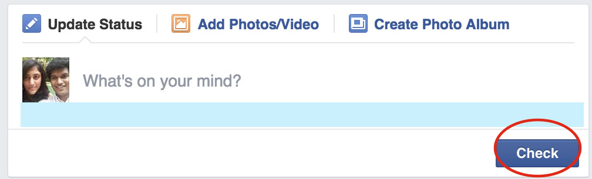
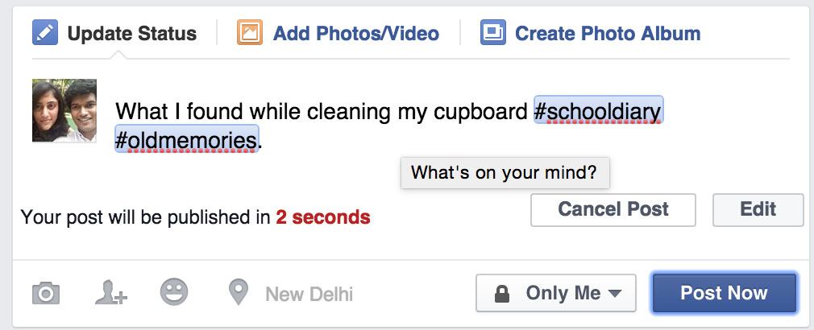
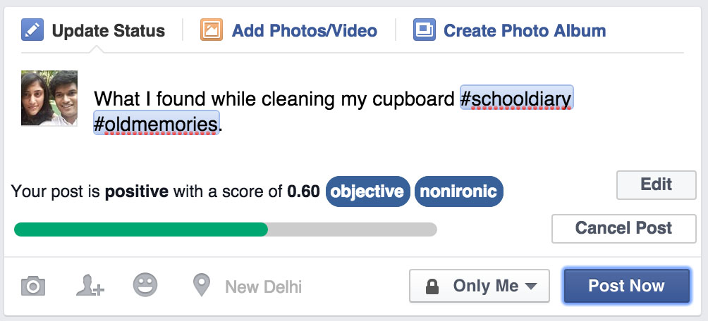
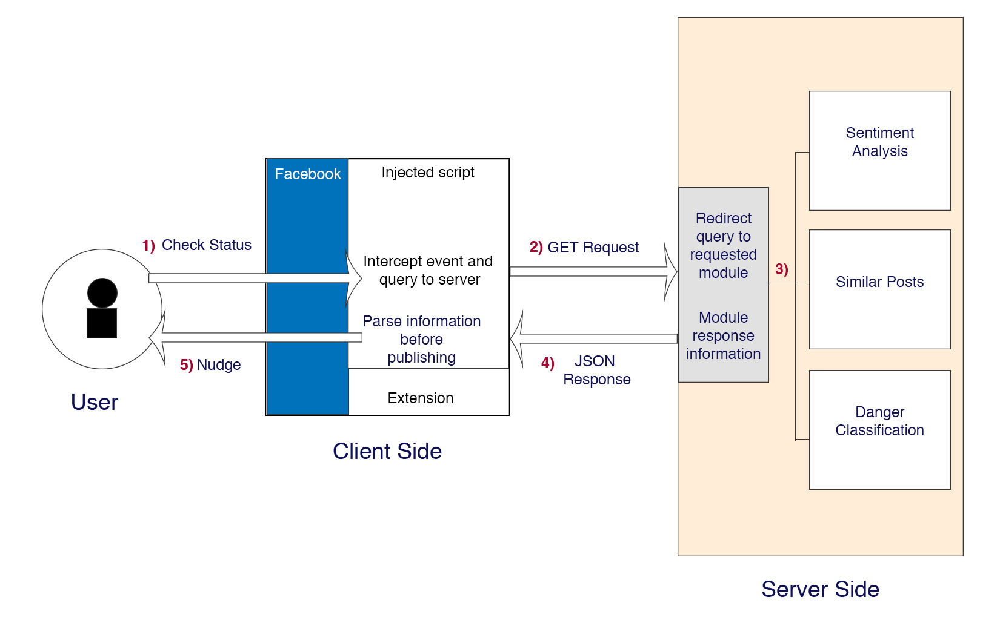

StatusCheck
Predict a Reddit user's vulnerability to harassment

Motivation
Social media is often used as a channel to broadcast one’s views. Often these opinions are politically incorrect, harassing or strongly obscene. Many such posts often lead to larger problems. Sometimes users get arrested. At other times they might get targeted by others, leading them to take drastic measures.
Solution
Nudging users with information was already being explored. Drawing inspiration from this paper, a new solution was conceived. While the paper mostly dealt with the privacy aspect of posts, the tool being discussed focusses on the security aspect.
In order to maintain the immersion provided by social media, this tool is packaged in the form of a browser extension that can provide vital information about a user’s post before it is published as a status.
Features
-

Unobtrusive Injection
The extension makes subtle changes at the interface level, so that the user doesn’t need to get readjusted. Unlike the traditional view, the “Post” button is now replaced by a “Check” button.
-

Timer Module
Defers the publishing of a post by a fixed duration. Along with this a new countdown timer is initiated, during which a user may decide to cancel or edit their post. They might also skip the process entirely by pressing the “Post Now” button.
-

Sentiment Module
The polarity of the user’s status is analyses. Apart from the sentiment it provides some more information as well (objective/subjective, ironic/unironic)
-

Similar Posts Module
Fetches up to 10 similar posts from Twitter’s public feed. Not only are the similar posts provided but they are also tagged with a general sentiment so that the user can learn about what other people are saying about the topics he/she is talking about.

Danger Classification Module
Statuses are classified as dangerous or safe. A post is termed dangerous, if it bares resemblance to previous posts that have gotten users arrested or fired or led to any other mishaps.
Backend Method
Sentiment Module
The MeaningCloud API is used to performs topic extraction on the status and evaluates the sentiment around the extracted topics - This helps perform more targeted analysis of the status. The response from the MeaningCloud API provides us different metrics about the status. This is a polarity score, the value of which varies from -1 to 1. According this value a score tag, a simple letter grade is assigned.
The grades provided are P(ositive), N(egative) and NEU(tral). The letter may also be succeeded by a “+” that indicates “strongly”, i.e. if the score tag is “N+”, then the analysed test is strongly negative.
Similar Posts Module
The MeaningCloud API is used to performs extracts keywords from the status - Specific keywords help in narrowing down the search query parameters. The response from are provided as keywords that are queried to the Twitter Search api to find similar posts.
These posts are quickly assigned a polarity via the TextBlob module at the backend.
Danger Classification Module
A classifier was trained before hand with a mean accuracy tested is 84%. The training set consists of 90 posts that got into trouble (arrests, firing etc.) and 90 safe/generic posts.
An SVM classifier is trained on the server using a custom feature set which comprises of vocabulary and polarity. Vocabulary included words flagged to be occurring more regularly in posts that get users into trouble. These are further classified into; words that indicate wrong intent: e.g. kill, shoot, bang, hate etc, profane words: e.g. sh*t, f**k, b**ch etc, subject words: e.g. god, boss, police, woman etc, situational words: e.g. die, blood, murder etc, and polarising words: e.g. black, nig**r etc.
Architecture
Future
Nudges based on Network and Profile
Since the extension works on the front end without any need of user authentication, there was no relevance of who was the poster. However, with access to this network, many new informative nudges can be explored.